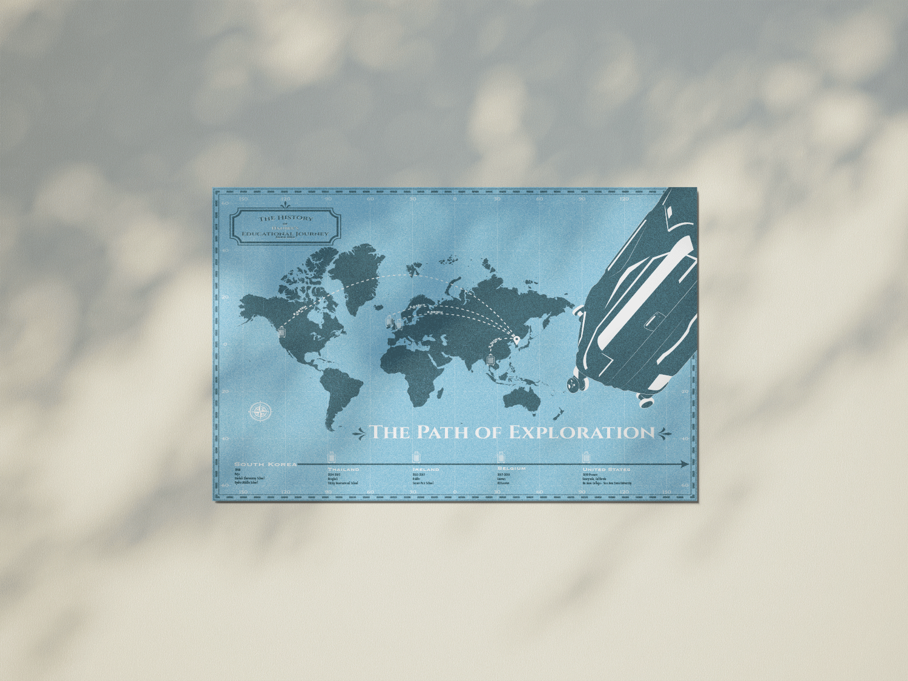
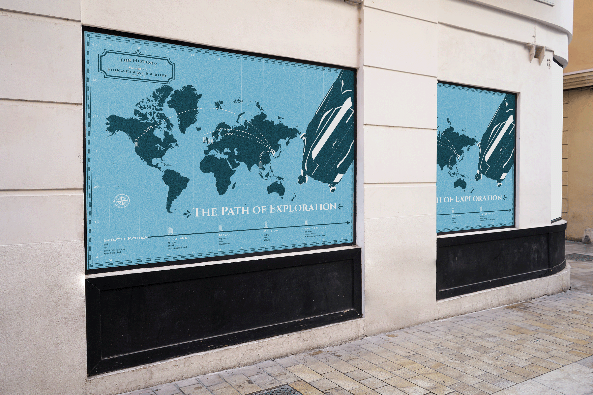
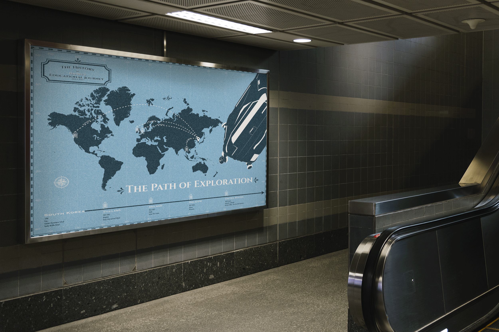

The Path of Exploration



High Resolution Images

The Path of Exploration
Type: A poster
Software Used:
The poster titled 'The Path of Exploration' encapsulates my remarkable educational odyssey from the age of 16, spanning across multiple countries. Departing from my homeland, South Korea, my academic journey has traversed through Thailand, Ireland, Belgium, culminating in my current residence in the United States. Through a strategic blend of pastel blue and navy blue tones, the poster employs a world map as its centerpiece, intricately weaving a timeline that highlights the pathways of my educational expedition. Each route signifies a pivotal juncture, showcasing the rich tapestry of experiences and knowledge acquired across diverse cultures, depicted within this compelling visual narrative."